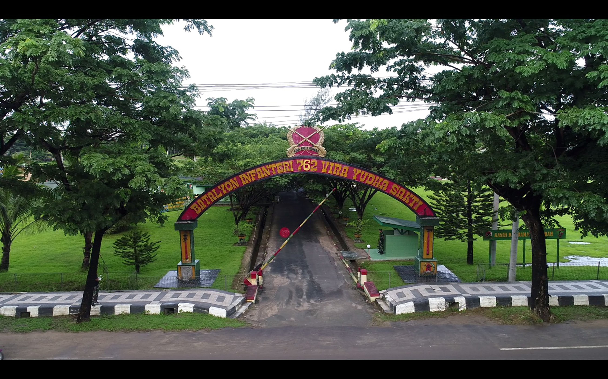

PEJABAT SATUAN
PEJABAT DANYONIF RK 762/VYS DARI MASA KE MASA
- Dan Yonif 752 Ke – 1
- Mayor Inf R. Basuki Agustus 1964 s/d Juli 1965
- Wadanyon Kapten Inf M. Suparman
- Dan Yonif 752 Ke – 2
- Letkol Inf A. Suhandi Juli 1965 s/d Desember 1965
- Wadanyon Kapten Inf M. Suparman
- Dan Yonif 752 Ke – 3
- Mayor Inf M. Suparman Desember 1965 s/d Juli 1970
- Wadanyon Kapten Inf A. N.Santi
- Dan Yonif 752 Ke – 4
- Mayor Inf Fordeling Napitupulu Juli 1970 s/d Januari 1971
- Wadanyon Kapten Inf A.N. Santi
- Dan Yonif 752 Ke – 5
- Mayor Inf Kamalirang Januari 1971 s/d Maret 1973
- Wadanyon Lettu Inf Jasman W.
- Dan Yonif 752 Ke – 6
- Mayor Inf Sukardi Maret 1972 s/d Maret 1973
- Wadanyon Kapten Inf Ramelan
- Dan Yonif 752 Ke – 7
- Mayor Inf Yusuf Adi Patah Desember 1973 s/d Januari 1976
- Wadanyon Kapten Inf Sumarjono H.
- Dan Yonif 752 Ke – 8
- Mayor Inf Sumarjono Januari 1976 s/d Maret 1979
- Wadanyon Kapten Inf Mulyono H.
- Dan Yonif 752 Ke – 9
- Mayor Inf Fidrus Jamal Maret 1979 s/d Agustus 1979
- Wadanyon Mayor Inf Mulyono H.
- Dan Yonif 752 Ke – 10
- Letkol Inf RS. Warauw Mei 1979 s/d Juni 1981
- Wadanyon Mayor Inf JB. Wenas
- Dan Yonif 752 Ke – 11
- Letkol Inf E. Imam Marsudi Juni 1981 s/d November 1982
- Wadanyon Mayor Inf JB. Wenas
- Dan Yonif 752 Ke – 12
- Mayor Inf Bukroni Akib November 1982 s/d Juni 1983
- Wadanyon Mayor Inf Ismed Yusairi
- Dan Yonif 752 Ke – 13
- Letkol Inf JB. Wenas Juli 1983 s/d Agustus 1984
- Wadanyon Mayor Inf Ismed Yusairi
- Dan Yonif 752 Ke – 14
- Mayor Inf Frans De Wanna Agustus 1984 s/d Agustus 1987
- Wadanyon Mayor Inf Ismed Yusairi
- Wadanyon Mayor Inf Ishar Samripy
- Dan Yonif 752 Ke – 15
- Mayor Inf Winarto Agustus 1987 s/d Juni 1989
- Wadanyon Mayor Inf Nana Suherna
- Dan Yonif 752 Ke – 16
- Mayor Inf Deden Suhardi Juni 1989 s/d Juli 1990
- Wadanyon belum terisi
- Dan Yonif 752 Ke – 17
- Letkol Inf Iswandi Anas Juli 1990 s/d September 1992
- Wadanyon Mayor Inf Muhamad Nasir
- Dan Yonif 752 Ke – 18
- Letkol Inf Emmis Mis Bahudin September 1992 s/d Juni 1993
- Wadanyon Mayor Inf Muhamad Nasir
- Dan Yonif 752 Ke – 19
- Letkol Inf MA. Munadjat Oktober 1993 s/d Juli 1995
- Wadanyon Kapten Inf Elmi Suchaimy
- Dan Yonif 752 Ke – 20
- Mayor Inf Slamet Sutanto Juli 1995 s/d 1997
- Wadanyon Kapten Inf Akhirudin
- Dan Yonif 752 Ke – 21
- Letkol Inf Eski Hermawan 1997 s/d 1998
- Wadanyon Mayor Inf Herumeidi
- Dan Yonif 752 Ke – 22
- Letkol Inf Bustanul Arifin 1998 s/d 1999
- Wadanyon Kapten Inf Suparman
- Dan Yonif 752 Ke – 23
- Mayor Inf Harizon 1999 s/d 1999
- Wadanyon Kapten Inf M. Suparman
- Dan Yonif 752 Ke – 24
- Letkol Inf Bachtiar 1999 s/d Oktober 2000
- Wadanyon Mayor Inf Suparman
- Wadanyon Mayor Inf Opan Sopandi
- Dan Yonif 752 Ke – 25
- Letkol Inf T. F. Gultom Oktober 2000 s.d April 2001
- Wadanyon Mayor Inf Opan Sopandi
- Dan Yonif 752 Ke – 26
- Mayor Inf Marsudi April 2001 s.d Juni 2002
- Wadanyon Kapten Inf M. Suparman
- Wadanyon Kapten Inf Bambang Sudarmanto
- Dan Yonif 752 Ke – 27
- Letkol Inf Gustav Agus I. Juni 2002 s.d Juli 2003
- Wadanyon Mayor Inf Bambang Sudarmanto
- Wadanyon Kapten Inf Yustinus Nono Yulianto
- Dan Yonif 752 Ke – 28
- Letkol Inf Rizerius E. HS. Juli 2003 s.d Oktober 2005
- Wadanyon Mayor Inf Yustinus Nono Yulianto.
- Wadanyon Kapten Inf Jon Heriko
- Dan Yonif 752 Ke – 29
- Letkol Inf Asrul Sani. Oktober 2005 s.d Nopember 2007
- Wadanyon Mayor Inf Jon Heriko.
- Dan Yonif 752 Ke – 30
- Letkol Inf Abdurrahman. Nopember 2007 s.d Juni 2010
- Wadanyon Mayor Inf Jon Heriko
- Wadanyon Mayor Inf Mahesa Fitriadi, S.AP
- Wadanyon Mayor Inf Nurdianto
- Dan Yonif 752 Ke – 31
- Letkol Inf Purmanto. Juni 2010 s.d. Mei 2011.
- Wadanyon Mayor Inf Nurdianto
- Dan Yonif 752 Ke – 32
- Letkol Inf Rudy J. Runtuwene. Mei 2012 s.d. 2013
- WWadanyon Mayor Inf Nurdianto
- Wadanyon Mayor Inf Rudi Setiawan
- Dan Yonif 752 Ke – 33
- Letkol Inf Ahmad Risman, S.E. 2012 s.d. 2013
- Wadanyon Mayor Inf Rudi Setiawan
- Wadanyon Mayor Abdul Hamid
- Dan Yonif 752 Ke – 34
- Letkol Inf A. Yoyok Pranowo 2013 s.d. 2014
- Wadanyon Mayor Inf Abdul Hamid
- Wadanyon Mayor Inf Hasrifudin Haruna
- Dan Yonif 752 Ke – 35
- Letkol Inf Hindratno Devidanto, S.E. 2014 s.d. 2015
- Wadanyon Mayor Inf Hasrifudin Haruna
- Wadanyon Mayor Inf Priyo Handoyo
- Dan Yonif 752 Ke – 36
- Letkol Inf Edgar Syalom Lalawi, S.I.P. 2015 s.d. 2016
- Wadanyon Mayor Inf Priyo Handoyo
- Wadanyon Kapten Inf Ary Prasetyawan
- Dan Yonif 752 Ke – 37
- Letkol Inf Dwi Mawan Sutanto., S.I.P.
- Wadanyon Mayor Inf Ary Prasetyawan
- Dan Yonif 752 Ke – 38
- Letkol Inf Eka Ganta Chandra, S.I.P. 2017 s.d. 2018
- Wadanyon Mayor Inf Ary Prasetyawan
- Dan Yonif 752 Ke – 39
- Letkol Inf Doddy Yudha, S.I.P. 20118 s.d. 2019
- Wadanyon Mayor Inf Ary Prasetyawan
- Dan Yonif 752 Ke – 40
- Letkol Inf Charlie Clay L. Sondakh, S.E 2019 sampai dengan sekarang.
- Wadanyon Mayor Inf Armawansyah Siregar
GALERI

